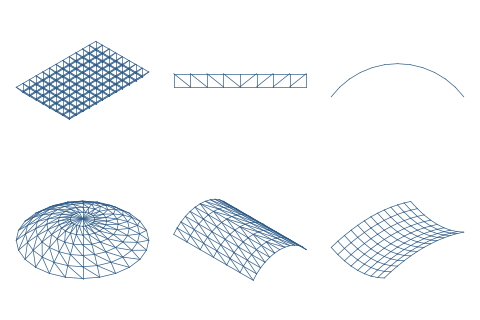

SAEngine shapes
Presets of the seven parametric shapes built into SAEngine (space truss, plane truss, arch, dome, barrel vault, cable net, portal frame): their starting values in the Generate panel, and a few named variants. The shapes themselves are part of SAEngine; this package holds only their parameters.

| Id | saengine-shapes |
|---|---|
| Kind | Structure template |
| Version | 1.1.0 |
| Author | SAEngine contributors |
| Licence | CC-BY-4.0 |
| Contains code | no (data only) |
Install it in SAEngine: ≡ › Packages... › Browse. SAEngine checks the signed package list and the SHA-256 of every download before it installs.